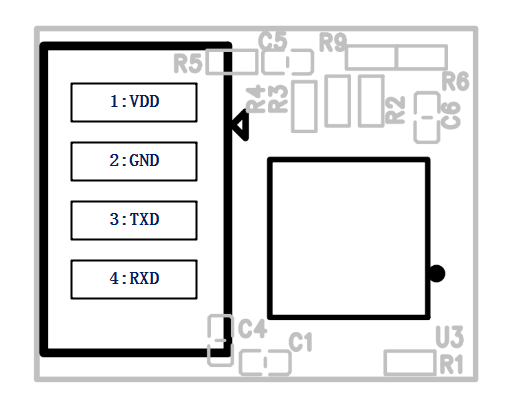

目录：
目前TOF模块主要特性是用于测试距离，可以快速计算出精确的距离。该支持2个接口：UART、I2C。在使用UART接口时，Master Controller发送Command，然后TOF Module处理完后response。在使用I2C接口访问时，TOF module是Slave Mode，Master Controller是Master Mode。
特别注意：关于Command Code，Customer只需要关心 0x81 Measuring distance cmd。其它的CMD基本上不会用到。
Master Controller和TOF Module通信主要是2种Mode：Uart Mode、I2C Mode。使用哪种Mode需根据Hardware Design来选择，下面详细介绍这2种mode：
硬件接口

Uart Mode的程序设计 下面的Figure描述了在Uart Mode时，Master Controller和TOF Module的完整交互过程：
如何设置Uart参数 TOF Module的Baud Rate设置为9600，Master Controller设置Uart参数时需要同步，具体所有参数设置如下：
| Parameter | Value | Description |
|---|---|---|
| UART Baud Rate | 9600 | This parameter represent the UART communication baud rate. |
| UART Word Length | 8 | Specifies the number of data bits transmitted or received in a frame. |
| UART Stop Bits | 1 | Specifies the number of stop bits transmitted. |
| UART Parity | None | Specifies the parity mode. |
| UART Hardware Flow Control | None | Specifies wether the hardware flow control mode is enabled or disabled. |
UART数据包的介绍 Master Controller和TOF Module之间使用UART通信时，传输数据包的格式是固定的，具体协议格式如下： 指令格式：Packet Header + Command Code + Data Length + Data + End Flag
| Offset(bytes) | Length(bytes) | Type | Description |
|---|---|---|---|
| 0 | 2 | uint16_t | Packet header: 0x55 0xAA |
| 2 | 1 | uint8_t | Command Code |
| 3 | 1 | uint8_t | The length of the following parameter |
| 4 | N | Array of uint8_t | Parameter, N = Data Length, N+4 < 32, depending the TOF Module buf size |
| L | 1 | uint8_t | End flag:0xFA , Offset computational formula is L = Data Length + 4 . |
硬件接口
I2C Mode程序设计 下面的Figure描述了在I2C Mode时，Master Controller和TOF Module的完整交互过程：
NOTE：在Send Read Cmd之前，需要Send Write Cmd。在获取Distance Value时，Send Write Cmd之后建议Delay 36ms再Send Read Cmd，因为TOF Module需要处理时间。小于36ms可能读取到的是上一次的数据。
I2C bus interface TOF Module I2C工作在Slave Mode，I2C Slave Address： 0x36
| ADDRESS | A6 | A5 | A4 | A3 | A2 | A1 | A0 | R/W |
|---|---|---|---|---|---|---|---|---|
| 0 | 1 | 1 | 0 | 1 | 1 | 0 | X |
I2C 数据包格式 I2C Write 和 Read的format上面有详细的描述，这里介绍一下TOF Module Response Data Format。接收到的第一个Byte是Command Code，后面紧接着是Data。 如果Response的第一个Byte是Cmd Code，代表后面是有效数据。如果Response的第一个Byte不是Cmd Code（0x00），代表后面的数据是无效数据。这种情况一般是TOF Module未完成Cmd的处理。
TOF Module Response Data Format：
| Offset(bytes) | Length(bytes) | Type | Description |
|---|---|---|---|
| 0 | 1 | uint8_t | Command Code |
| 1 | 1 | uint8_t | Data length |
| 2 to N | N-2 | uint8_t | Raw data. The data length is different for each command. The N computational formula is N = data length + 2. |
这里主要介绍目前TOF支持哪些命令，每个Command回复的数据格式。UART和I2C会再次把有效数据封装，方便正确的解析数据。UART和I2C封装的格式不一样，具体的Format请参考上面的章节介绍。
Command Code List 下面所有的Cmd Code对于UART Mode或者I2C Mode的作用是同样的，返回的有限数据也一样。
| Command Code | Description |
|---|---|
| 0x81 | Measuring distance, Unit: mm |
| 0x82 | Crosstalk calibration |
| 0x83 | Offset calibration |
| 0x84 | Reset Tof module |
| 0x85 | Read factory data |
| 0x86 | Read version information |
| 0x8A | Read debug parameter section 1 |
| 0x8B | Read debug parameter section 2 |
| 0x8C | Read debug parameter section 3 |
| 0x91 | Set the threshold of interrupt output |
| 0x92 | Set the ranging mode |
Factory Calibration Error Code List 当TOF Module执行Calibration Cmd出现错误时，会把Error Code Response给Master Controller。
| Error Code | Description |
|---|---|
| 0x00 | No Error |
| 0x01 | Crosstalk calibration is error |
| 0x02 | Offset calibration is error |
Command functions (1): Measuring distance cmd: 0x81 Cmd Response有效数据格式如下：
| Offset(bytes) | Length(bytes) | Type | Description |
|---|---|---|---|
| 0 | 2 | int16_t | range1，measuring distance value.(Unit:mm) |
| 2 | 1 | uint8_t | range1_status, measurement status1. |
关于range1 status error code如下：
| Error Code | Error Status | Description |
|---|---|---|
| 0x00 | VALID_DATA | Valid data. |
| 0x01 | VCSEL_SHORT | When the VCSEL is short-circuited. If this error occurs, the VCSEL current will not flow inside the IC. |
| 0x02 | LOW_SIGNAL | The amount of reflected light obtained from the detected object is small. |
| 0x04 | LOW_SN | The ratio of reflected light from the detected object and disturbance light is small. |
| 0x08 | TOO_MUCH_AMB | Disturbance light is large. |
| 0x10 | WAF | Wrap around error. |
| 0x20 | CAL_ERROR | Internal calculation error. |
| 0x80 | CROSSTALK_ERROR | Crosstalk from the panel is large. |
下面是参考的Sample Code，主要是体现UART、I2C发送和接收到的数据格式：
xxxxxxxxxx// Uart send cmd:(Master -> TOF)uint8_t distance_cmd[] = {0x55, 0xAA, 0x81, 0x00, 0xFA};// I2c send cmd:(Master -> TOF)uint8_t CmdCode = 0x81;uint8_t data = 0x01;i2c_write_byte(CmdCode, data);/******************************************///当range1=0x004D,range1_status=0x00时，Uart和I2C接收的数据格式如下：// Uart Recieve Data:(TOF -> Master)uint8_t uart_recv_buf[] = {0x55, 0xAA, 0x81, 0x03, 0x00, 0x4D, 0x00, 0xFA};// I2C Recieve Data:(TOF -> Master)uint8_t i2c_recv_buf[256]={0};uint8_t CmdCode = 0x81;uint8_t len = 5;i2c_read_buffer(i2c_recv_buf, CmdCode, len);//执行完i2c_read_buffer函数后，i2c_recv_buf[256] = {0x81, 0x03, 0x00, 0x4D, 0x00};(2): Crosstalk calibration cmd: 0x82 TOF模块接收到该Cmd后，先进行Crosstalk Calibration，然后将Calibration Value保存到Flash，并且反馈给Master Controller。Cmd Response有效数据格式如下：
| Offset(bytes) | Length(bytes) | Type | Description |
|---|---|---|---|
| 0 | 1 | uint8_t | errCode，Refer to Factory Calibration Error Code List sections. |
| 1 | 1 | uint8_t | xtakLsb, crosstalk data_factory |
| 2 | 1 | uint8_t | xtakMsb, crosstalk data_factory |
(3): Offset calibration cmd: 0x83 TOF模块接收到该Cmd后，先进行Offset Calibration，然后将Calibration Value保存到Flash，并且反馈给Master Controller。Cmd Response有效数据格式如下：
| Offset(bytes) | Length(bytes) | Type | Description |
|---|---|---|---|
| 0 | 1 | uint8_t | errCode，Refer to Factory Calibration Error Code List sections. |
| 1 | 1 | uint8_t | offset_short1, offset for short range mode 1 |
| 2 | 1 | uint8_t | offset_short2, offset for short range mode 2 |
| 3 | 1 | uint8_t | offset_long1, offset for long range mode 1 |
| 4 | 1 | uint8_t | offset_long2, offset for long range mode 2 |
(NOTE: TOF模块使用gp2ap03vt sensor没有offset_long1和offset_long2，只有gp2ap02vt sensor才有这2个数据。)
(4): Read factory data cmd: 0x85 该cmd主要功能是获取Calibration后，保存在flash上的factory data. Cmd Response有效数据格式如下：
| Offset(bytes) | Length(bytes) | Type | Description |
|---|---|---|---|
| 0 | 1 | uint8_t | offset_short1, offset for short range mode 1 |
| 1 | 1 | uint8_t | offset_short2, offset for short range mode 2 |
| 2 | 1 | uint8_t | offset_long1, offset for long range mode 1 |
| 3 | 1 | uint8_t | offset_long2, offset for long range mode 2 |
| 4 | 1 | uint8_t | xtakLsb, crosstalk data_factory |
| 5 | 1 | uint8_t | xtakMsb, crosstalk data_factory |
| 6 | 1 | uint8_t | factory_calibrated: 0x00: Calibration is not done. 0x01: Offset calibration is passed. 0x02: Crosstalk calibration is passed. 0x03:Offset and Crosstalk calibration is passed. |
(NOTE: TOF模块使用gp2ap03vt sensor没有offset_long1和offset_long2，只有gp2ap02vt sensor才有这2个数据。)
(5): Read version information cmd: 0x86 该cmd主要功能是获取tof模块软硬件相关信息，Cmd Response有效数据格式如下：
| Offset(bytes) | Length(bytes) | Type | Description |
|---|---|---|---|
| 0 | 1 | uint8_t | sensor_ic： 0x02: The sensor is gp2ap02vt. 0x03: The sensor is gp2ap03vt. |
| 1 | 1 | uint8_t | port: 0x41('A'): Firmware supports both UART and I2C interfaces. 0x49('I'): Firmware supports I2C interface. 0x55('U'): Firmware supports UART interface. |
| 2 | 1 | uint8_t | Firmware version information for the TOF module. |
(6): Read debug parameter section 1 cmd: 0x8A 该cmd主要是出现问题时，为了方便追踪问题的Debug信息。Section 1的数据格式如下：
| Offset(bytes) | Length(bytes) | Type | Description |
|---|---|---|---|
| 0 | 2 | int16_t | range1, range1 mm |
| 2 | 1 | uint8_t | range1_status, measurement status1 |
| 3 | 2 | uint16_t | range1_raw, range1 mm for checking value before error processing |
| 5 | 4 | int32_t | ret_sig, return signal |
| 9 | 4 | int32_t | data_xtalk, crosstalk data |
(7): Read debug parameter section 2 cmd: 0x8B 该cmd主要是出现问题时，为了方便追踪问题的Debug信息。Section 2的数据格式如下：
| Offset(bytes) | Length(bytes) | Type | Description |
|---|---|---|---|
| 0 | 4 | int32_t | ret_maxcnt_fx28p |
| 4 | 4 | int32_t | ref_sig, reference signal |
| 8 | 4 | int32_t | amb_fx28p |
(8): Read debug parameter section 3 cmd: 0x8C 该cmd主要是出现问题时，为了方便追踪问题的Debug信息。Section 3的数据格式如下：
| Offset(bytes) | Length(bytes) | Type | Description |
|---|---|---|---|
| 0 | 4 | int32_t | data_xtalk_factory, crosstalk data_factory |
| 4 | 1 | int8_t | offset_short1, offset for short range mode 1 |
| 5 | 4 | int32_t | data_xtalk_pre, crosstalk data |
NOTE:
1：Tof模块返回的Debug信息是大端序的，如果Master Controller是小端序，那么这里需要转换。可以参考下面的SWAP32和SWAP16大小端序转换。
2： 注意结构体字对齐的问题，定义结构体需要 attribute ((packed)) 修饰， 告诉编译器取消结构在编译过程中的优化对齐,按照实际占用字节数进行对齐 。
下面是Read Debug parameter的Sample Code：
test_debug_info.h
xxxxxxxxxx /** * @brief TOF module Command code * */typedef enum { TOFM_CMD_NONE = 0x00, TOFM_CMD_START_FLAG = 0x80, TOFM_CMD_ST_MM = 0x81, TOFM_CMD_CALI_XTALK = 0x82,TOFM_CMD_CALI_OFS = 0x83, TOFM_CMD_RESET = 0x84, TOFM_CMD_RD_FACTORY_DATA = 0x85, TOFM_CMD_RD_VERSION_INFO = 0x86, TOFM_CMD_RD_DEBUG_PARA1 = 0x8A, TOFM_CMD_RD_DEBUG_PARA2 = 0x8B, TOFM_CMD_RD_DEBUG_PARA3 = 0x8C, TOFM_CMD_CODE_COUNT,}TOFM_CMD_CODE_E;/** * @brief I2C data playload * */typedef struct{ uint8_t cmdCode; /**< command code, from TOFM_CMD_CODE_E */ uint8_t dataLen; /**< length of the following parameter */ uint8_t data[0];}__attribute__((packed))I2C_DATA_PAYLOAD_T;/** * @brief Debug parameters * */typedef struct{ int16_t range1; /*!< range1 mm */ uint8_t range1_status; /*!< measurement status1 */uint16_t range1_raw; /* < range1 mm for checking value before error processing */ int32_t ret_sig; /*!< return signal */ int32_t data_xtalk; /*!< crosstalk data */}__attribute__((packed))TOFM_DEBUG_PARA1_PAYLOAD_T;typedef struct{ int32_t ret_maxcnt_fx28p; int32_t ref_sig; /*!< reference signal */ int32_t amb_fx28p;}__attribute__((packed))TOFM_DEBUG_PARA2_PAYLOAD_T;typedef struct{ int32_t data_xtalk_factory; /*!< crosstalk data_factory */int8_t offset_short1; /*!< offset for short range mode 1 */ int32_t data_xtalk_pre; /*!< crosstalk data */}__attribute__((packed))TOFM_DEBUG_PARA3_PAYLOAD_T;test_debug_info.c
xxxxxxxxxxstatic uint8_t I2c_Buf_Read[I2C_READ_BUFFER_SIZE]; void Test_Debug_Info(void){ uint8_t wdata; I2C_DATA_PAYLOAD_T *i2cDataBuf = (I2C_DATA_PAYLOAD_T *)I2c_Buf_Read; memset(I2c_Buf_Read, 0, I2C_READ_BUFFER_SIZE); wdata = 0x01; I2C_TOFM_BufferWrite(TOFM_CMD_ST_MM, &wdata, sizeof(uint8_t));Delay_ms(40); I2C_TOFM_BufferRead(TOFM_CMD_ST_MM, I2c_Buf_Read, sizeof(I2C_DATA_PAYLOAD_T) + sizeof(TOFM_MEAS_DATA_PAYLOAD_T));if((i2cDataBuf->cmdCode == TOFM_CMD_ST_MM) && (i2cDataBuf->dataLen == sizeof(TOFM_MEAS_DATA_PAYLOAD_T))) { TOFM_MEAS_DATA_PAYLOAD_T *measDataPayload = (TOFM_MEAS_DATA_PAYLOAD_T *)i2cDataBuf->data; printf("range1 = %dmm\r\n", measDataPayload->range1_msb << 8 | measDataPayload->range1_lsb); } printf("#########################Debug Info########################\r\n"); wdata = 0x01; I2C_TOFM_BufferWrite(TOFM_CMD_RD_DEBUG_PARA1, &wdata, sizeof(uint8_t)); Delay_ms(1); I2C_TOFM_BufferRead(TOFM_CMD_RD_DEBUG_PARA1, I2c_Buf_Read, sizeof(I2C_DATA_PAYLOAD_T) + sizeof(TOFM_DEBUG_PARA1_PAYLOAD_T)); if((i2cDataBuf->cmdCode == TOFM_CMD_RD_DEBUG_PARA1) && (i2cDataBuf->dataLen == sizeof(TOFM_DEBUG_PARA1_PAYLOAD_T))) { TOFM_DEBUG_PARA1_PAYLOAD_T *dbgPara1Payload = (TOFM_DEBUG_PARA1_PAYLOAD_T *)i2cDataBuf->data; printf("range1 = 0x%04x\r\n", SWAP16(dbgPara1Payload->range1)); printf("range1_status = 0x%02x\r\n",dbgPara1Payload->range1_status); printf("range1_raw = 0x%04x\r\n",SWAP16(dbgPara1Payload->range1_raw)); printf("ret_sig = 0x%08x\r\n",SWAP32(dbgPara1Payload->ret_sig)); printf("data_xtalk = 0x%08x\r\n",SWAP32(dbgPara1Payload->data_xtalk)); } wdata = 0x01; I2C_TOFM_BufferWrite(TOFM_CMD_RD_DEBUG_PARA2, &wdata, sizeof(uint8_t)); Delay_ms(1); I2C_TOFM_BufferRead(TOFM_CMD_RD_DEBUG_PARA2, I2c_Buf_Read, sizeof(I2C_DATA_PAYLOAD_T) + sizeof(TOFM_DEBUG_PARA2_PAYLOAD_T));if((i2cDataBuf->cmdCode == TOFM_CMD_RD_DEBUG_PARA2) && (i2cDataBuf->dataLen == sizeof(TOFM_DEBUG_PARA2_PAYLOAD_T))) { TOFM_DEBUG_PARA2_PAYLOAD_T *dbgPara2Payload = (TOFM_DEBUG_PARA2_PAYLOAD_T *)i2cDataBuf->data; printf("ret_maxcnt_fx28p = 0x%08x\r\n", SWAP32(dbgPara2Payload->ret_maxcnt_fx28p)); printf("ref_sig = 0x%08x\r\n", SWAP32(dbgPara2Payload->ref_sig)); printf("amb_fx28p = 0x%08x\r\n", SWAP32(dbgPara2Payload->amb_fx28p)); } wdata = 0x01; I2C_TOFM_BufferWrite(TOFM_CMD_RD_DEBUG_PARA3, &wdata, sizeof(uint8_t)); Delay_ms(1); I2C_TOFM_BufferRead(TOFM_CMD_RD_DEBUG_PARA3, I2c_Buf_Read, sizeof(I2C_DATA_PAYLOAD_T) + sizeof(TOFM_DEBUG_PARA3_PAYLOAD_T)); if((i2cDataBuf->cmdCode == TOFM_CMD_RD_DEBUG_PARA3) && (i2cDataBuf->dataLen == sizeof(TOFM_DEBUG_PARA3_PAYLOAD_T))) { TOFM_DEBUG_PARA3_PAYLOAD_T *dbgPara3Payload = (TOFM_DEBUG_PARA3_PAYLOAD_T *)i2cDataBuf->data; printf("data_xtalk_factory = 0x%08x\r\n", SWAP32(dbgPara3Payload->data_xtalk_factory)); printf("offset_short1 = 0x%02x\r\n",dbgPara3Payload->offset_short1); printf("data_xtalk_pre = 0x%08x\r\n", SWAP32(dbgPara3Payload->data_xtalk_pre)); } printf("############################################################\r\n");}测试结果：
range1 = 316mm #########################Debug Info######################## range1 = 0x013c range1_status = 0x00 range1_raw = 0x013c ret_sig = 0x00000488 data_xtalk = 0x0000016c ret_maxcnt_fx28p = 0x00558000 ref_sig = 0x0000a000 amb_fx28p = 0x00000366 data_xtalk_factory = 0x00000000 offset_short1 = 0x00 data_xtalk_pre = 0x00000000 ############################################################
(9): Set the threshold of interrupt output: 0x91 该cmd主要是设置输出中断信号的阈值，阈值包括：近距离、远距离。具体数据格式如下：
| Offset(bytes) | Length(bytes) | Type | Description |
|---|---|---|---|
| 0 | 2 | uint16_t | Close range threshold |
| 2 | 2 | uint16_t | Far range threshold |
例如：55 AA 91 04 64 00 E8 03 FA 近距离阈值：0x0064 近距离阈值：0x03E8
(10): Set the ranging mode: 0x92 该cmd主要是设置测试距离模式，可以设置为持续输出距离。具体数据格式如下：
| Offset(bytes) | Length(bytes) | Type | Description |
|---|---|---|---|
| 0 | 1 | uint8_t | 0：Close continuous output data 1：Open continuous output data |
例如： 关闭持续测距模式：55 AA 92 01 00 FA 打开持续测距模式：55 AA 92 01 01 FA